Telnet был стандартным протоколом для удаленного доступа к компьютерам на протяжении многих лет, но его практически полностью заменил протокол SSH (Secure Shell) . Главная причина этому — фундаментальная проблема безопасности, так как telnet передает данные в незашифрованном виде, что дает возможность перехватить незашифрованный трафик. ssh шифрует трафик, что делает его безопасным для использования.
Ключевой недостаток telnet заключался в том, что вся передаваемая информация, включая имена пользователей, пароли и команды, отправлялась по сети в незашифрованном виде (в виде открытого текста) . Это делало его крайне уязвимым: любой, кто имел доступ к сети, мог перехватить трафик с помощью специальных программ и легко получить чужие пароли и доступ к системам
Основное нововведение ssh — шифрование всех данных, передаваемых между клиентом и сервером . Это гарантирует, что даже в случае перехвата трафика, злоумышленник увидит только зашифрованный набор символов, а не реальные пароли и команды.
Благодаря этому SSH очень быстро завоевал популярность и стал новым стандартом де-факто для безопасного удаленного администрирования серверов
Протокол Telnet был разработан еще в 1969 году для сети ARPANET, когда интернет был закрытой средой, состоящей из ограниченного числа надежных компьютеров . В те времена безопасность не была приоритетом.
Протокол SSH был разработан в середине 1990-х годов финским разработчиком Тату Юлёненом, чтобы решить проблему незащищенности Telnet и подобных ему протоколов (например, rlogin)
Итак, если кратко:
Telnet — это старый, незащищенный протокол, который передает все данные в открытом виде.
SSH — это его современная, безопасная замена, которая шифрует весь трафик и защищает от кражи данных.
Здесь мы рассмотрим использование Telnet для получения информации о сервере и входа в систему, если известны учетные данные.
Определяем IP нашей удаленной машины Metasploitable 2. Для этого сначала даем команду определить на IP:
ifconfig
Эта команда выдаст нам наш IP адрес, например 10.0.2.4, зная наш IP и маску подсети мы можем определить диапазон IP нашей сети 10.0.2.0/24.
Из вывода команды видим маска подсети netmask 255.255.255.0.
Именно маска 255.255.255.0 определяет размер сети.
Она означает:
255.255.255.0 = /24
В двоичном виде:
255 .255 .255 .0 11111111 .11111111 .11111111 .00000000
Первые 24 бита (1) — это часть, отвечающая за адрес сети.
Последние 8 бит (0) — это часть, отвечающая за адреса хостов.
Для нашего IP:
IP: 10.0.2.4
Маска: 255.255.255.0
Получаем:
Адрес сети: 10.0.2.0
Доступные хосты: 10.0.2.1 – 10.0.2.254
Broadcast: 10.0.2.255
Таким образом, именно маска 255.255.255.0 позволяет определить, что последние 8 бит используются для нумерации устройств в сети. Зная IP и маску, можно вычислить адрес сети и broadcast.
Теперь даем команду обнаружения других машин в нашей сети:
sudo netdiscover -r 10.0.2.0/24
Видим netdiscover выдало нам IP 10.0.2.3 - это IP нашей удаленной машины Metasploitable 2.
Теперь можем перейти к части где мы входим в удаленную Metasploitable 2 при помощи TELNET.
Запускам msfconsole командой терминала Kali Linux:
msfconsole
Когда msfconsole выдаст приглашение для ввода команд, вводим поиск модуля в msfconsole:
search telnet
Когда мы выполняем:
msf > search telnet
Metasploit ищет все модули, в названии или описании которых встречается слово telnet.
Если мы знаем наперед какой модуль будем искать можно в поиске задать несколько слов, например:
msf > search telnet scanner telnet_version
В таком случае будет показано меньше результатов, будет сразу показано то что нас интересует.
Итак, наша команда search telnet.
Результат поиска на скриншоте, нужный модуль 78 выделен:
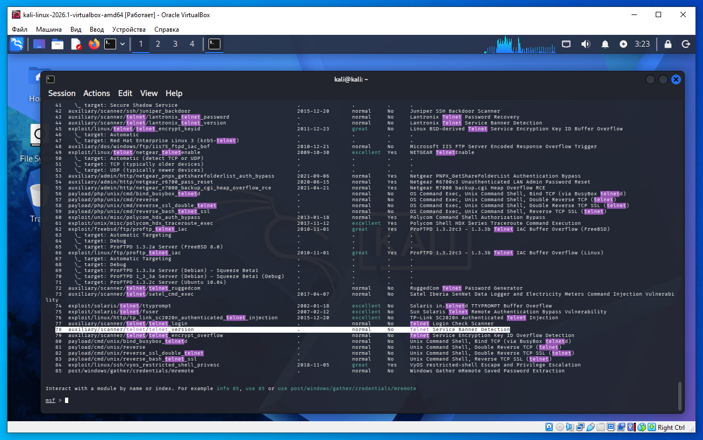
Возможно у вас другая версия msfconsole, у меня в результатах выдало 85 модулей. Нам нужен 78 модуль:
78 auxiliary/scanner/telnet/telnet_version . normal No Telnet Service Banner Detection
Столбец Значение Что означает # 78 Номер результата поиска. Name auxiliary/scanner/telnet/telnet_version Полное имя модуля. Disclosure Date . Дата публикации уязвимости. Rank normal Рейтинг надежности модуля. Check No Есть ли команда check. Description Telnet Service Banner Detection Краткое описание.
Строка означает следующее.
78
Это просто номер результата поиска.
Для использования модуля можно написать:
use 78
вместо
use auxiliary/scanner/telnet/telnet_version
auxiliary/scanner/telnet/telnet_version
Это полный путь к модулю.
Разберем по частям:
auxiliary — вспомогательный модуль. Он не получает shell и не эксплуатирует уязвимости.
scanner — предназначен для сканирования.
telnet — работает с сервисом Telnet.
telnet_version — определяет сервис по баннеру и пытается узнать его версию.
.
Это дата публичного раскрытия уязвимости (CVE). День, когда уязвимость стала публично известна. Почему у telnet_version стоит точка .? Потому что: telnet_version не является эксплойтом; он не использует никакую уязвимость; следовательно, даты раскрытия уязвимости у него нет.
normal
Это Rank (рейтинг надежности модуля).
Для exploit-модулей он показывает, насколько надежно работает эксплойт:
excellent
great
good
normal
average
low
manual
У вспомогательных модулей (auxiliary) этот рейтинг обычно не имеет большого практического значения.
No
Это колонка Check.
Она показывает, поддерживает ли модуль команду:
check
Эксплойты часто умеют проверить, уязвима ли цель, не выполняя атаку.
У этого модуля:
No
потому что он не эксплуатирует ничего — он просто подключается и читает баннер.
Telnet Service Banner Detection
Это краткое описание модуля.
Буквально:
Определение Telnet-сервиса по баннеру.
То есть модуль:
открывает TCP-соединение на порт 23;
читает приветственное сообщение (banner);
выводит информацию о Telnet-сервисе.
Итого
Команда
search telnet
не ищет эксплойты специально. Она показывает все модули, связанные с Telnet:
auxiliary/scanner/... — сканеры (определение сервиса, подбор паролей и т. п.);
exploit/... — эксплойты для известных уязвимостей в конкретных реализациях Telnet;
post/... — модули, которые работают уже после получения доступа;
иногда payload/... или encoder/..., если они относятся к Telnet.
В статье выбран именно auxiliary/scanner/telnet/telnet_version, потому что это самый простой модуль: он лишь подтверждает, что на указанном IP работает Telnet, и показывает его баннер. Затем мы уже используем обычный клиент telnet для входа в систему с известными учетными данными которые показаны на баннере (так как Metasploitable 2 это учебная ОС учетные данные есть на баннере ftp).
Итак мы нашли модуль номер 78, выбираем его командой:
use 78
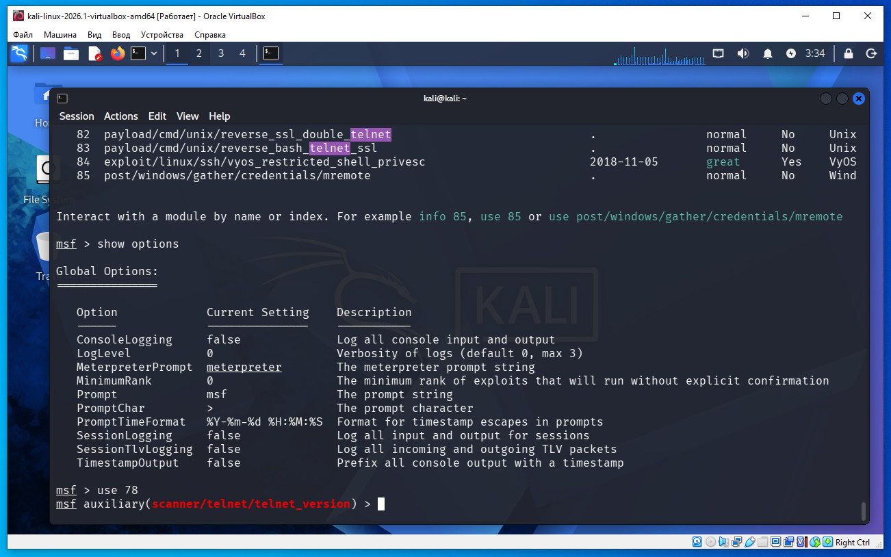
Далее необходимо посмотреть какие опции модуля необходимо установить, даем команду:
show options
Нужная строка на скриншоте ниже выделена:
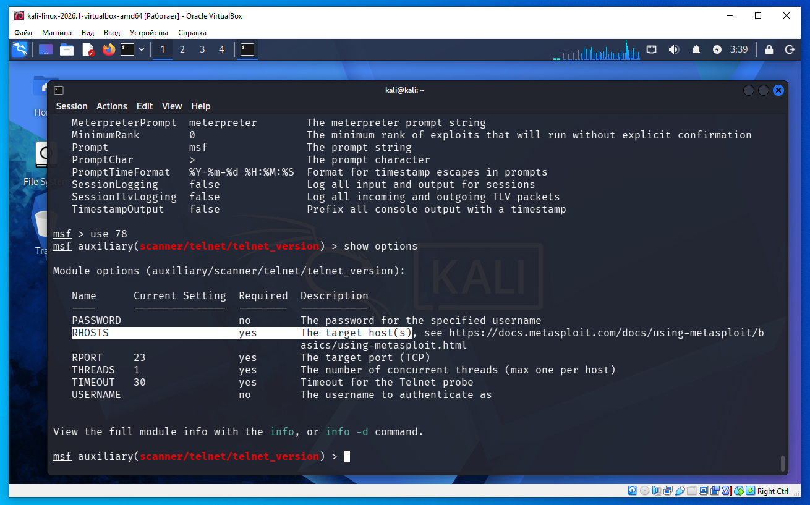
RHOSTS yes The target host(s)
Для строки RHOSTS в столбце Requierd стоит yes - это значит обязательно необохдимо для работы модуля. Установим RHOSTS командой, где 10.0.2.3 это IP адрес удаленной Metasploitable 2 который мы определили ранее:
set RHOSTS 10.0.2.3
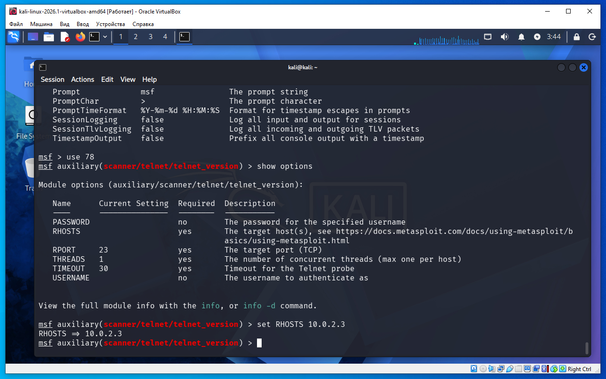
Теперь еще раз дадим команду show options что бы проверить, что значение IP установилось:
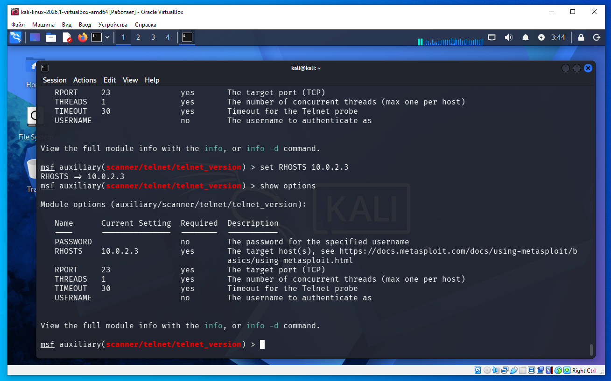
Как видим значение RHOSTS установлено правильно. Далее выполняем команду для запуска сканера:
exploit
или
run
Как видим ниже на скриншоте (выделено) из баннера мы можем получить логин/пароль это msfadmin/msfadmin.
Это относится именно к учебной машине Metasploitable 2.
У нее специально оставлены учебные учетные данные.
Например:
login: msfadmin
password: msfadmin
В реальных системах пароль почти никогда не отображается в баннере. На Metasploitable это сделано специально для обучения.
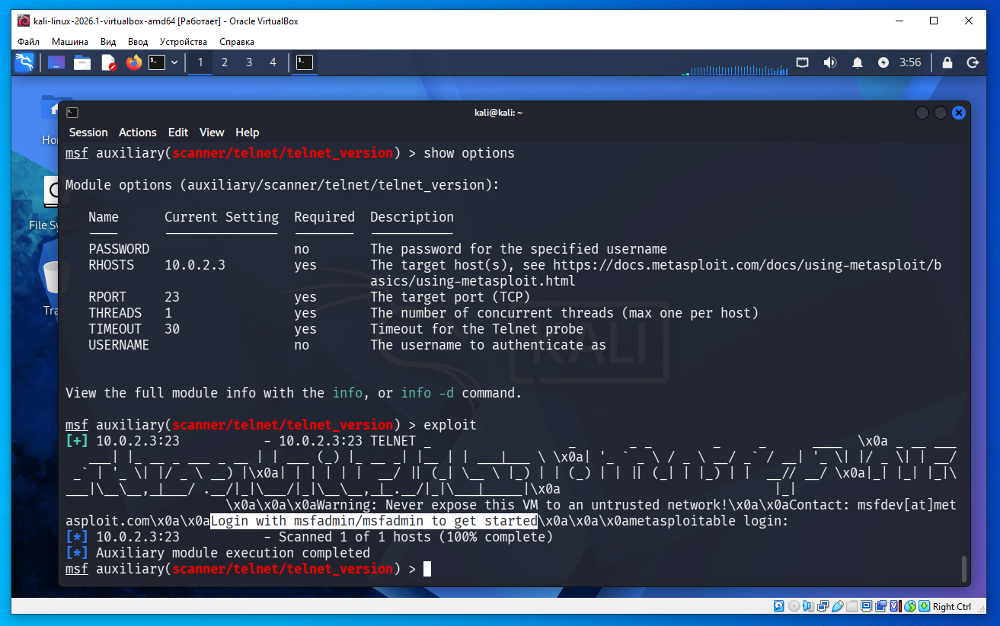
Даем команду:
exit
что бы выйти из msfconsole. Теперь у нас есть логин/пароль от ftp Metasploitable 2 и мы можем просто использовать telnet что бы войти. Вводим логин/пароль (скриншот ниже):
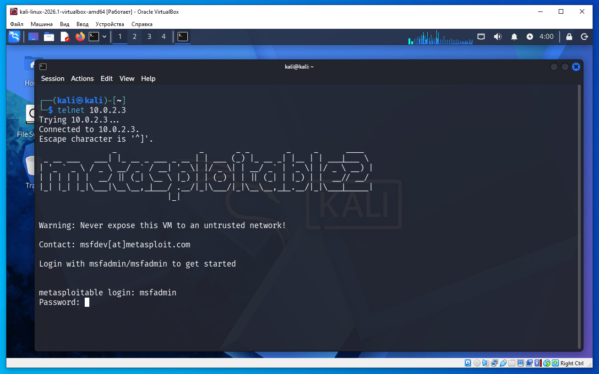
И после ввода логина/пароля видим приглашение Metasploitable 2 (на скриншоте ниже):
msfadmin@metasploitable:~$
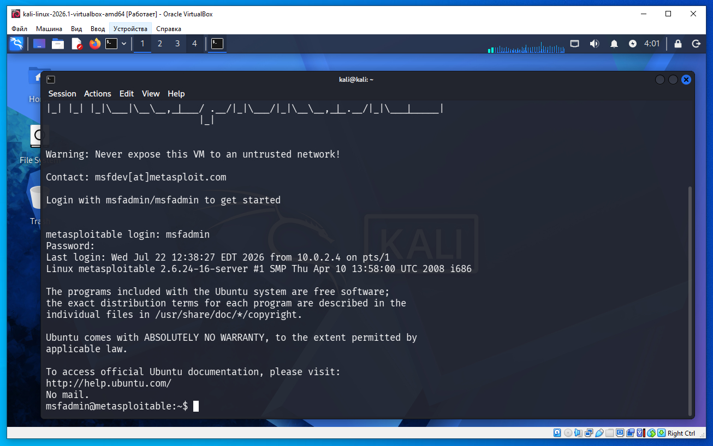
Для проверки что мы на Metasploitable 2 дадим команду ifconfig, на скриншоте ниже выделен IP 10.0.2.3 Metasploitable 2 который мы определили ранее:
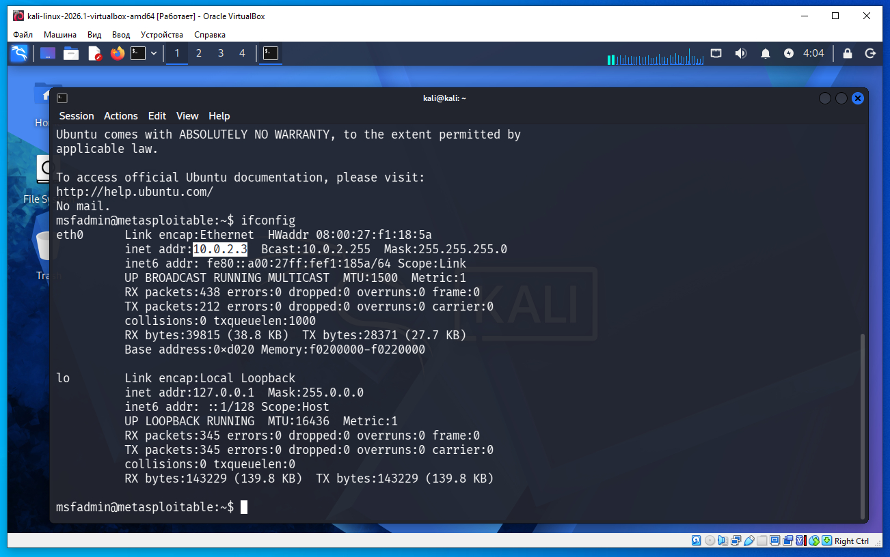
Теперь дадим команду:
whoami
На скриншоте ниже видим вывод msfconsole - это наш логин ftp, вывод совпадает с логином.
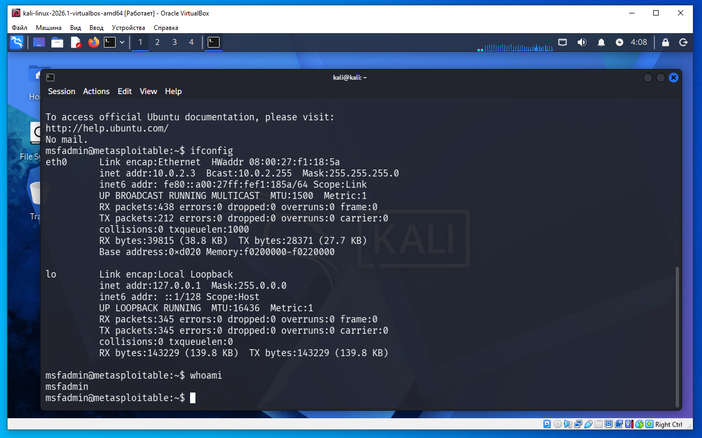
Теперь можно еще и зайти как root дав команду (sudo super user):
sudo su
и далее ввести пароль msfadmin (скриншот ниже). Видим приглашение от root:
root@metasploitable:/home/msfadmin#
То есть мы стали root, но остались в той же папке, в которой находились раньше - в домашней папке предыдущего пользователя msfadmin. При смене пользоваетля на root домашняя папка автоматически не показывается что изменилась. При смене пользователя sudo su меняется пользователь, но не меняется текущая рабочая директория. Домашняя папка root — это /root, но мы в нее автоматически не переходим после sudo su.
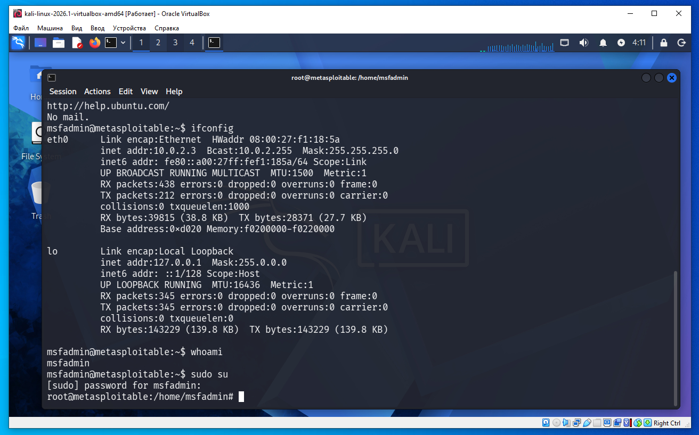
Далее для проверки что мы root дадим команду whoami (скриншот ниже):
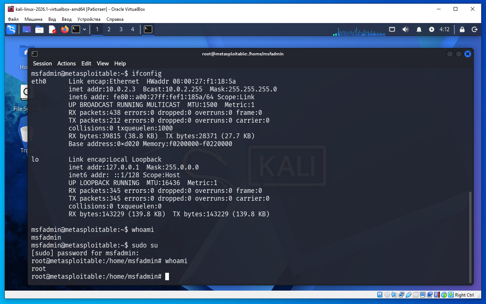
Подключаться можно по telnet вобще без Metasploit.
telnet 10.0.2.3
То есть Metasploit даже не нужен.
Можно использовать обычный клиент Telnet.
Он подключится к серверу:
telnet 10.0.2.3
После подключения увидим тот же баннер на котором указано логин/пароль.
Для выхода из сеанса Metasploitable 2 ftp в терминале дадим команду exit.
Так же есть возможность зайти по telnet еще и такой командой:
telnet 10.0.2.3 -l msfadmin
где параметр -l говорит сразу какой мы будем использовать логин.
Это показано на скриншоте ниже, ввод пароля:
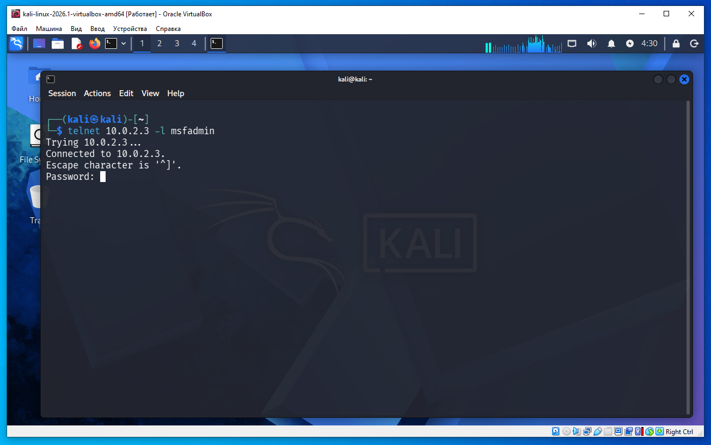
И после ввода пароля вход в Metasploitable 2:
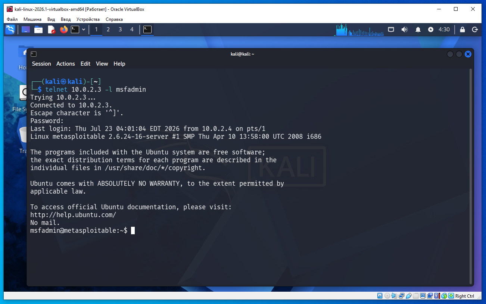
В строке подключения telnet что такое:
Escape character is '^]'.
Она означает:
Если мы нажмем сочетание клавиш Ctrl + ], то перейдем в командный режим клиента Telnet.
Это специальная комбинация клавиш для управления самим клиентом Telnet, а не удаленным сервером.
Например:
Подключился:
Connected to 192.168.79.179. Escape character is '^]'.
Нажал Ctrl + ].
Появится приглашение Telnet:
telnet>
Теперь можно вводить команды самого клиента, например:
telnet> close
— закрыть текущее соединение.
Или:
telnet> quit
— выйти из программы Telnet.
Что означает ^]?
Запись:
^]
означает:
^ — клавиша Ctrl;
] — клавиша с символом ].
То есть нужно нажать Ctrl + ].
У протокола FTP понятия Escape character нет. Сообщение Escape character is '^]' — это особенность клиента Telnet, а не протокола FTP.
Если мы нажалм Ctrl + ] и оказались в приглашении:
telnet>
то вернуться в сеанс Telnet можно командой:
telnet> continue
или сокращенно:
telnet> c
После этого мы снова окажемся в удаленной сессии.